library(fpp3)Exercise Week 7: Solutions
fpp3 8.8, Ex7
Find an ETS model for the Gas data from
aus_productionand forecast the next few years. Why is multiplicative seasonality necessary here? Experiment with making the trend damped. Does it improve the forecasts?
aus_production |> autoplot(Gas)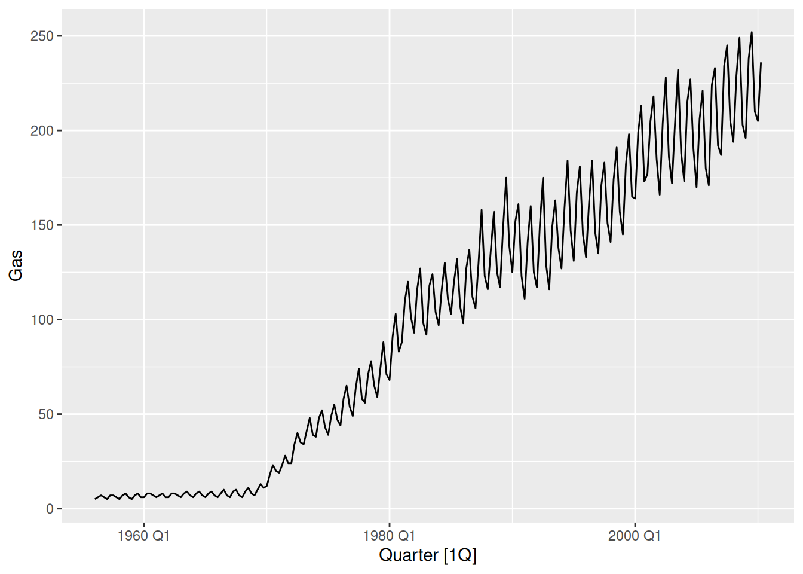
- There is a huge increase in variance as the series increases in level. => That makes it necessary to use multiplicative seasonality.
fit <- aus_production |>
model(
hw = ETS(Gas ~ error("M") + trend("A") + season("M")),
hwdamped = ETS(Gas ~ error("M") + trend("Ad") + season("M")),
)
fit |> glance()# A tibble: 2 × 9
.model sigma2 log_lik AIC AICc BIC MSE AMSE MAE
<chr> <dbl> <dbl> <dbl> <dbl> <dbl> <dbl> <dbl> <dbl>
1 hw 0.00324 -831. 1681. 1682. 1711. 21.1 32.2 0.0413
2 hwdamped 0.00329 -832. 1684. 1685. 1718. 21.1 32.0 0.0417- The non-damped model seems to be doing slightly better here, probably because the trend is very strong over most of the historical data.
fit |>
select(hw) |>
gg_tsresiduals()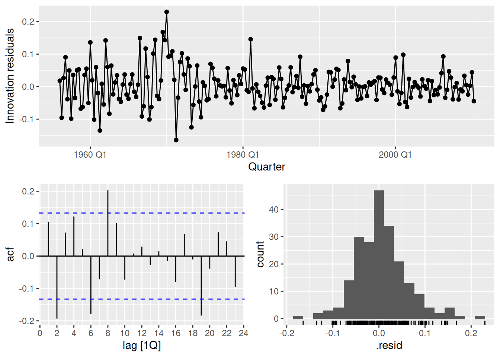
fit |> tidy()# A tibble: 19 × 3
.model term estimate
<chr> <chr> <dbl>
1 hw alpha 0.653
2 hw beta 0.144
3 hw gamma 0.0978
4 hw l[0] 5.95
5 hw b[0] 0.0706
6 hw s[0] 0.931
7 hw s[-1] 1.18
8 hw s[-2] 1.07
9 hw s[-3] 0.816
10 hwdamped alpha 0.649
11 hwdamped beta 0.155
12 hwdamped gamma 0.0937
13 hwdamped phi 0.980
14 hwdamped l[0] 5.86
15 hwdamped b[0] 0.0994
16 hwdamped s[0] 0.928
17 hwdamped s[-1] 1.18
18 hwdamped s[-2] 1.08
19 hwdamped s[-3] 0.817 fit |>
augment() |>
filter(.model == "hw") |>
features(.innov, ljung_box, lag = 24)# A tibble: 1 × 3
.model lb_stat lb_pvalue
<chr> <dbl> <dbl>
1 hw 57.1 0.000161- There is still some small correlations left in the residuals, showing the model has not fully captured the available information.
- There also appears to be some heteroskedasticity in the residuals with larger variance in the first half the series.
fit |>
forecast(h = 36) |>
filter(.model == "hw") |>
autoplot(aus_production)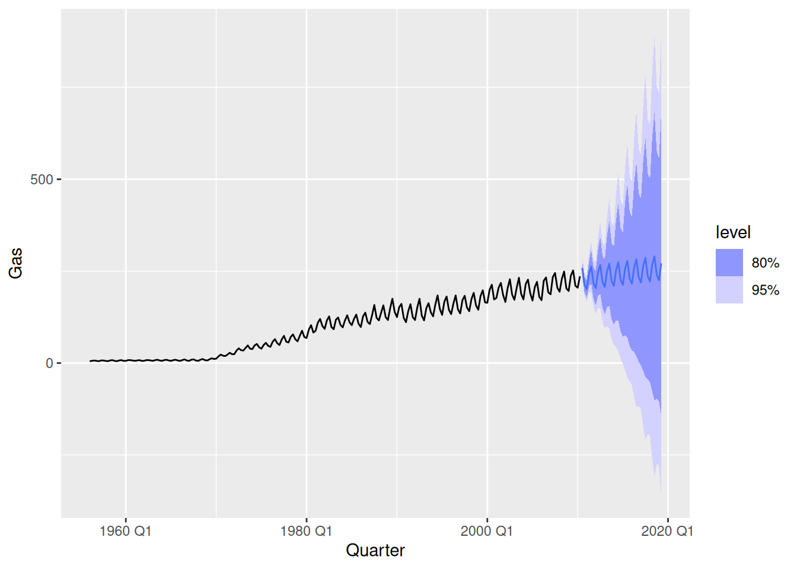
While the point forecasts look ok, the intervals are excessively wide.
fpp3 8.8, Ex10
Compute the total domestic overnight trips for holidays across Australia from the
tourismdataset.
- Plot the data and describe the main features of the series.
aus_trips <- tourism |>
summarise(Trips = sum(Trips))
aus_trips |>
autoplot(Trips)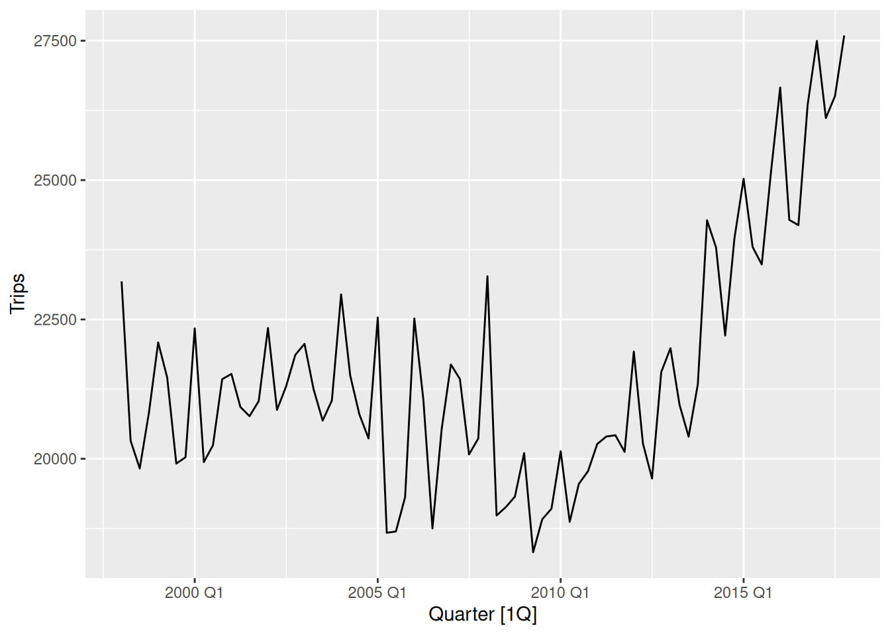
- The data is seasonal.
- A slightly decreasing trend exists until 2010, after which it is replaced with a stronger upward trend.
- Decompose the series using STL and obtain the seasonally adjusted data.
dcmp <- aus_trips |>
model(STL(Trips)) |>
components()
dcmp |>
as_tsibble() |>
autoplot(season_adjust)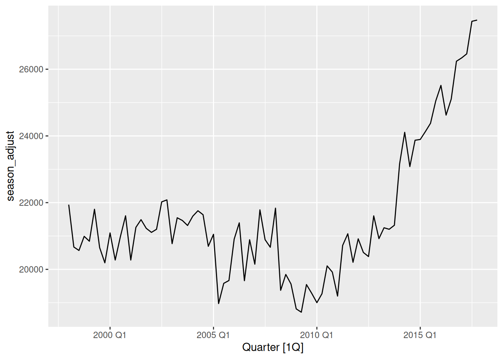
- Forecast the next two years of the series using an additive damped trend method applied to the seasonally adjusted data. (This can be specified using
decomposition_model().)
stletsdamped <- decomposition_model(
STL(Trips),
ETS(season_adjust ~ error("A") + trend("Ad") + season("N"))
)
aus_trips |>
model(dcmp_AAdN = stletsdamped) |>
forecast(h = "2 years") |>
autoplot(aus_trips)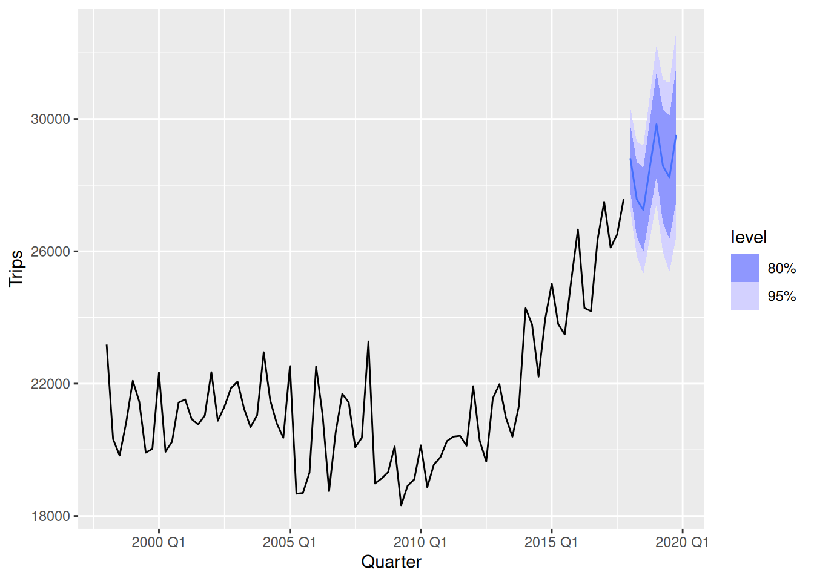
- Forecast the next two years of the series using an appropriate model for Holt’s linear method applied to the seasonally adjusted data (as before but without damped trend).
stletstrend <- decomposition_model(
STL(Trips),
ETS(season_adjust ~ error("A") + trend("A") + season("N"))
)
aus_trips |>
model(dcmp_AAN = stletstrend) |>
forecast(h = "2 years") |>
autoplot(aus_trips)
- Now use
ETS()to choose a seasonal model for the data.
fit <- aus_trips |>
model(ets = ETS(Trips))
fit |> report()Series: Trips
Model: ETS(A,A,A)
Smoothing parameters:
alpha = 0.4495675
beta = 0.04450178
gamma = 0.0001000075
Initial states:
l[0] b[0] s[0] s[-1] s[-2] s[-3]
21689.64 -58.46946 -125.8548 -816.3416 -324.5553 1266.752
sigma^2: 699901.4
AIC AICc BIC
1436.829 1439.400 1458.267 fit |> tidy()# A tibble: 9 × 3
.model term estimate
<chr> <chr> <dbl>
1 ets alpha 0.450
2 ets beta 0.0445
3 ets gamma 0.000100
4 ets l[0] 21690.
5 ets b[0] -58.5
6 ets s[0] -126.
7 ets s[-1] -816.
8 ets s[-2] -325.
9 ets s[-3] 1267. fit |> forecast(h = "2 years") |> autoplot(aus_trips)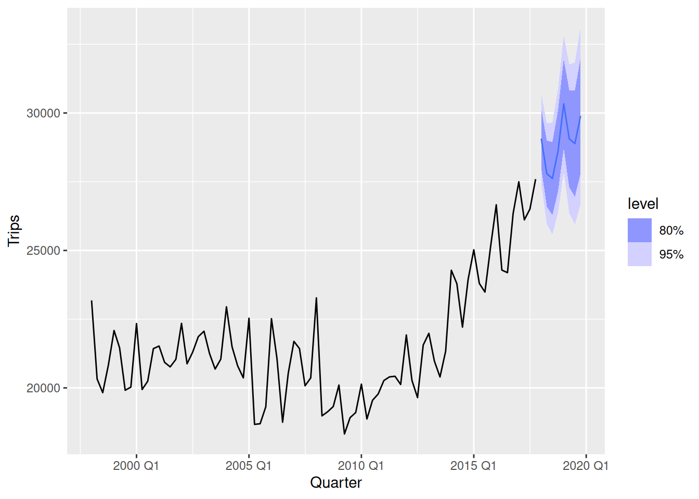
- Compare the RMSE of the ETS model with the RMSE of the models you obtained using STL decompositions. Which gives the better in-sample fits?
fit <- aus_trips |>
model(
dcmp_AAdN = stletsdamped,
dcmp_AAN = stletstrend,
ets = ETS(Trips)
)
fit |>
select(ets) |>
tidy()# A tibble: 9 × 3
.model term estimate
<chr> <chr> <dbl>
1 ets alpha 0.450
2 ets beta 0.0445
3 ets gamma 0.000100
4 ets l[0] 21690.
5 ets b[0] -58.5
6 ets s[0] -126.
7 ets s[-1] -816.
8 ets s[-2] -325.
9 ets s[-3] 1267. fit |>
select(ets) |>
report()Series: Trips
Model: ETS(A,A,A)
Smoothing parameters:
alpha = 0.4495675
beta = 0.04450178
gamma = 0.0001000075
Initial states:
l[0] b[0] s[0] s[-1] s[-2] s[-3]
21689.64 -58.46946 -125.8548 -816.3416 -324.5553 1266.752
sigma^2: 699901.4
AIC AICc BIC
1436.829 1439.400 1458.267 accuracy(fit)# A tibble: 3 × 10
.model .type ME RMSE MAE MPE MAPE MASE RMSSE ACF1
<chr> <chr> <dbl> <dbl> <dbl> <dbl> <dbl> <dbl> <dbl> <dbl>
1 dcmp_AAdN Training 103. 763. 576. 0.367 2.72 0.607 0.629 -0.0174
2 dcmp_AAN Training 99.7 763. 574. 0.359 2.71 0.604 0.628 -0.0182
3 ets Training 105. 794. 604. 0.379 2.86 0.636 0.653 -0.00151- The STL decomposition forecasts using the additive trend model, ETS(A,A,N), is slightly better in-sample.
- However, note that this is a biased comparison as the models have different numbers of parameters.
- Compare the forecasts from the three approaches? Which seems most reasonable?
fit |>
forecast(h = "2 years") |>
autoplot(aus_trips, level = NULL)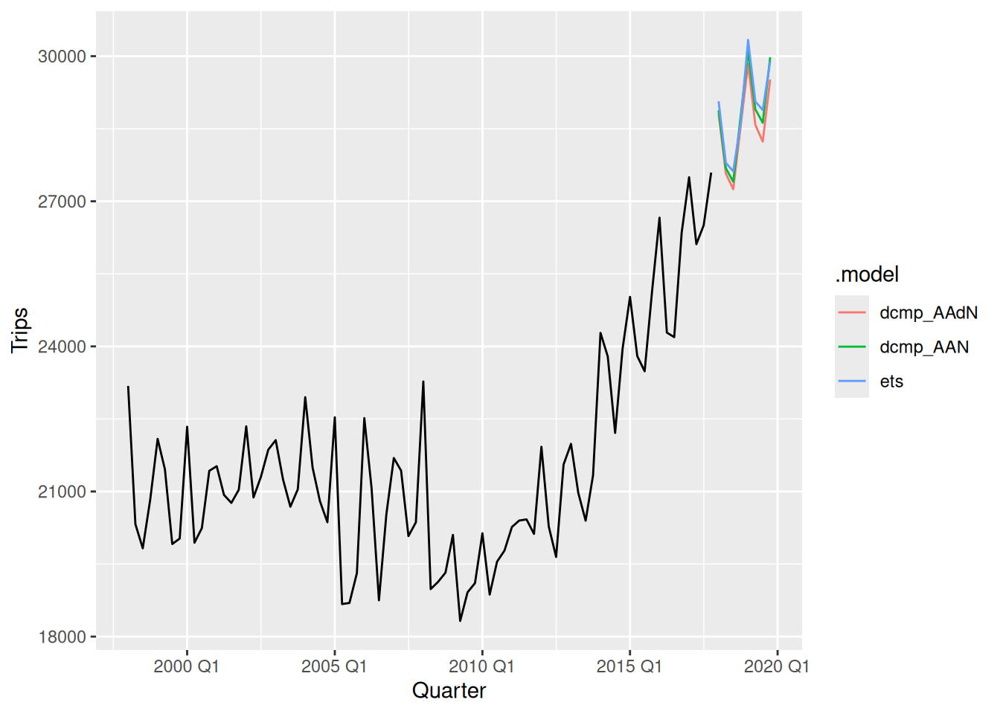
The forecasts are almost identical. So I’ll use the decomposition model with additive trend as it has the smallest RMSE.
- Check the residuals of your preferred model.
best <- fit |>
select(dcmp_AAN)
report(best)Series: Trips
Model: STL decomposition model
Combination: season_adjust + season_year
========================================
Series: season_adjust
Model: ETS(A,A,N)
Smoothing parameters:
alpha = 0.4806411
beta = 0.04529462
Initial states:
l[0] b[0]
21366.07 1.279692
sigma^2: 585061
AIC AICc BIC
1418.816 1419.627 1430.727
Series: season_year
Model: SNAIVE
sigma^2: 3210.8552 augment(best) |> gg_tsdisplay(.resid, lag_max = 24, plot_type = "histogram")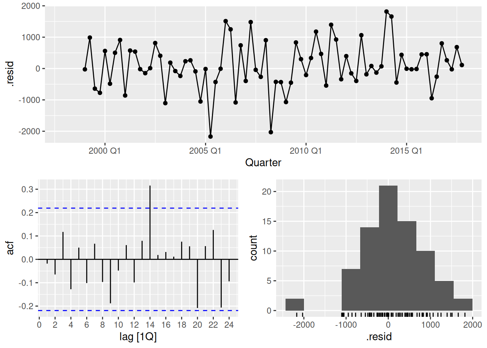
augment(best) |> features(.innov, ljung_box, lag = 24)# A tibble: 1 × 3
.model lb_stat lb_pvalue
<chr> <dbl> <dbl>
1 dcmp_AAN 33.3 0.0976- The residuals look okay however there still remains some significant auto-correlation. Nevertheless, the results pass the Ljung-Box test.
- The large spike at lag 14 can probably be ignored.
fpp3 8.8, Ex11
For this exercise use the quarterly number of arrivals to Australia from New Zealand, 1981 Q1 – 2012 Q3, from data set
aus_arrivals.
- Make a time plot of your data and describe the main features of the series.
nzarrivals <- aus_arrivals |> filter(Origin == "NZ")
nzarrivals |> autoplot(Arrivals / 1e3) + labs(y = "Thousands of people")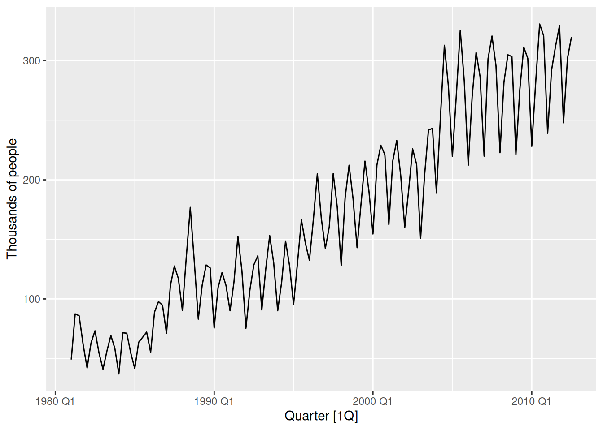
- The data has an upward trend.
- The data has a seasonal pattern which increases in size approximately proportionally to the average number of people who arrive per year. Therefore, the data has multiplicative seasonality.
- Create a training set that withholds the last two years of available data. Forecast the test set using an appropriate model for Holt-Winters’ multiplicative method.
nz_tr <- nzarrivals |>
slice(1:(n() - 8))
nz_tr |>
model(ETS(Arrivals ~ error("M") + trend("A") + season("M"))) |>
forecast(h = "2 years") |>
autoplot() +
autolayer(nzarrivals, Arrivals)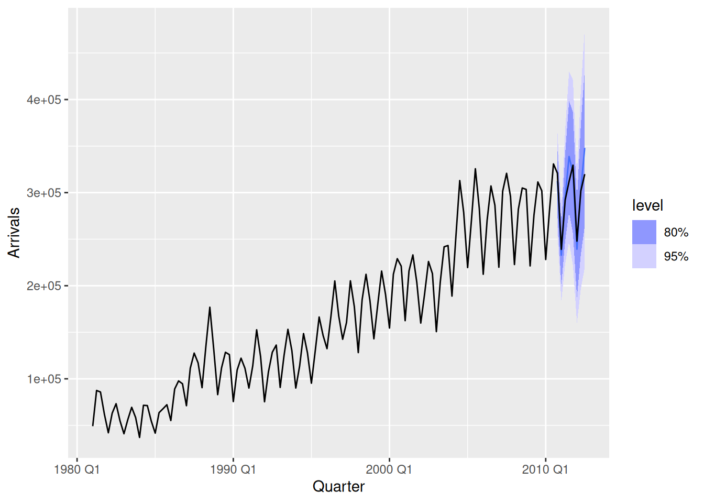
- Why is multiplicative seasonality necessary here?
- The multiplicative seasonality is important in this example because the seasonal pattern increases in size proportionally to the level of the series.
- The behaviour of the seasonal pattern will be captured and projected in a model with multiplicative seasonality.
- Forecast the two-year test set using each of the following methods:
- an ETS model;
- an additive ETS model applied to a log transformed series;
- a seasonal naïve method;
- an STL decomposition applied to the log transformed data followed by an ETS model applied to the seasonally adjusted (transformed) data.
fc <- nz_tr |>
model(
ets = ETS(Arrivals),
log_ets = ETS(log(Arrivals)),
snaive = SNAIVE(Arrivals),
stl = decomposition_model(STL(log(Arrivals)), ETS(season_adjust))
) |>
forecast(h = "2 years")
fc |>
autoplot(level = NULL) +
autolayer(filter(nzarrivals, year(Quarter) > 2000), Arrivals)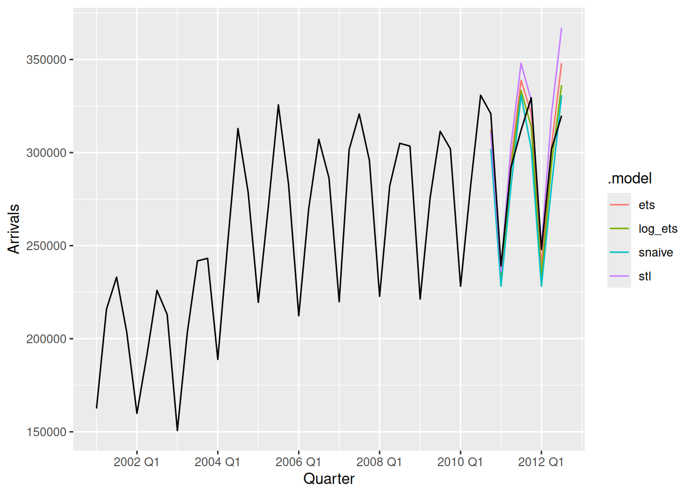
fc |>
autoplot(level = NULL) +
autolayer(nzarrivals, Arrivals)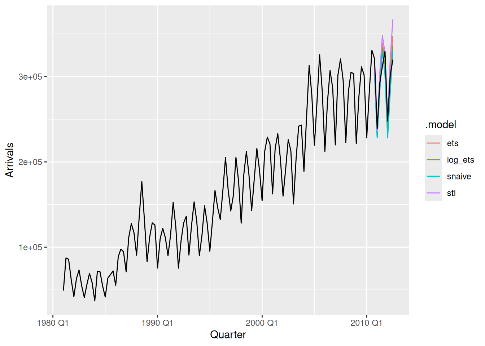
- Which method gives the best forecasts? Does it pass the residual tests?
fc |>
accuracy(nzarrivals)# A tibble: 4 × 11
.model Origin .type ME RMSE MAE MPE MAPE MASE RMSSE ACF1
<chr> <chr> <chr> <dbl> <dbl> <dbl> <dbl> <dbl> <dbl> <dbl> <dbl>
1 ets NZ Test -3495. 14913. 11421. -0.964 3.78 0.768 0.771 -0.0260
2 log_ets NZ Test 2467. 13342. 11904. 1.03 4.03 0.800 0.689 -0.0786
3 snaive NZ Test 9709. 18051. 17156. 3.44 5.80 1.15 0.933 -0.239
4 stl NZ Test -12535. 22723. 16172. -4.02 5.23 1.09 1.17 0.109 - The best method is the ETS model on the logged data (based on RMSE), and it passes the residuals tests.
log_ets <- nz_tr |>
model(ETS(log(Arrivals)))
log_ets |> gg_tsresiduals()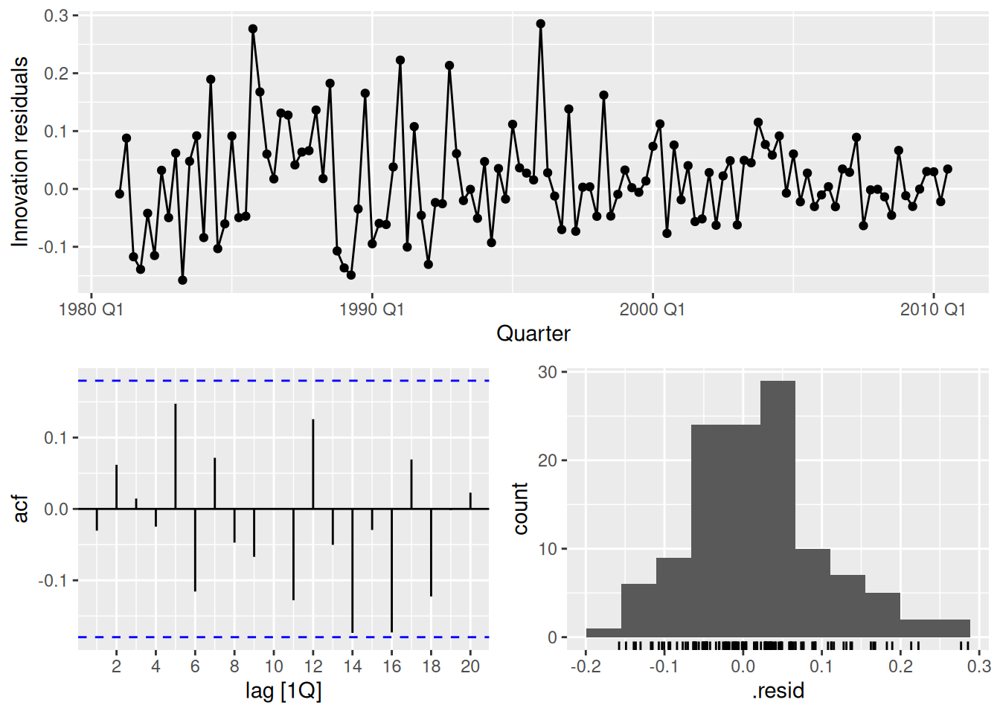
augment(log_ets) |>
features(.innov, ljung_box, lag = 12)# A tibble: 1 × 4
Origin .model lb_stat lb_pvalue
<chr> <chr> <dbl> <dbl>
1 NZ ETS(log(Arrivals)) 11.0 0.530
- Compare the same four methods using time series cross-validation instead of using a training and test set. Do you come to the same conclusions?
nz_cv <- nzarrivals |>
slice(1:(n() - 3)) |>
stretch_tsibble(.init = 36, .step = 3)
nz_cv |>
model(
ets = ETS(Arrivals),
log_ets = ETS(log(Arrivals)),
snaive = SNAIVE(Arrivals),
stl = decomposition_model(STL(log(Arrivals)), ETS(season_adjust))
) |>
forecast(h = 3) |>
accuracy(nzarrivals)# A tibble: 4 × 11
.model Origin .type ME RMSE MAE MPE MAPE MASE RMSSE ACF1
<chr> <chr> <chr> <dbl> <dbl> <dbl> <dbl> <dbl> <dbl> <dbl> <dbl>
1 ets NZ Test 4627. 15327. 11799. 2.23 6.45 0.793 0.797 0.283
2 log_ets NZ Test 4388. 15047. 11566. 1.99 6.36 0.778 0.782 0.268
3 snaive NZ Test 8244. 18768. 14422. 3.83 7.76 0.970 0.976 0.566
4 stl NZ Test 4252. 15618. 11873. 2.04 6.25 0.798 0.812 0.244- An initial fold size (
.init) of 36 has been selected to ensure that sufficient data is available to make reasonable forecasts. - A step size of 3 (and forecast horizon of 3) has been used to reduce the computation time.
- The ETS model on the log data still appears best (based on 3-step ahead forecast RMSE).
fpp3 8.8, Ex12
- Apply cross-validation techniques to produce 1 year ahead ETS and seasonal naïve forecasts for Portland cement production (from
aus_production). Use a stretching data window with initial size of 5 years, and increment the window by one observation.
cement_cv <- aus_production |>
slice(1:(n() - 4)) |>
stretch_tsibble(.init = 5 * 4)
fc <- cement_cv |>
model(ETS(Cement), SNAIVE(Cement)) |>
forecast(h = "1 year")
- Compute the MSE of the resulting 4-step-ahead errors. Comment on which forecasts are more accurate. Is this what you expected?
fc |>
group_by(.id, .model) |>
mutate(h = row_number()) |>
ungroup() |>
as_fable(response = "Cement", distribution = Cement) |>
accuracy(aus_production, by = c(".model", "h"))# A tibble: 8 × 11
.model h .type ME RMSE MAE MPE MAPE MASE RMSSE ACF1
<chr> <int> <chr> <dbl> <dbl> <dbl> <dbl> <dbl> <dbl> <dbl> <dbl>
1 ETS(Cement) 1 Test -0.0902 82.9 60.1 -0.227 3.95 0.597 0.625 -0.00185
2 ETS(Cement) 2 Test -0.653 101. 72.0 -0.325 4.74 0.708 0.756 0.495
3 ETS(Cement) 3 Test -1.71 119. 87.0 -0.492 5.80 0.856 0.894 0.616
4 ETS(Cement) 4 Test -0.729 137. 102. -0.543 6.65 1.01 1.03 0.699
5 SNAIVE(Ceme… 1 Test 30.9 138. 107. 1.97 6.99 1.06 1.04 0.640
6 SNAIVE(Ceme… 2 Test 30.0 139. 107. 1.90 6.96 1.05 1.04 0.649
7 SNAIVE(Ceme… 3 Test 29.5 139. 107. 1.85 6.95 1.05 1.04 0.651
8 SNAIVE(Ceme… 4 Test 30.8 140. 108 1.91 6.99 1.06 1.05 0.637 The ETS results are better for all horizons, although getting closer as h increases. With a long series like this, I would expect ETS to do better as it should have no trouble estimating the parameters, and it will include trends if required.
fpp3 8.8, Ex13
Compare
ETS(),SNAIVE()anddecomposition_model(STL, ???)on the following five time series. You might need to use a Box-Cox transformation for the STL decomposition forecasts. Use a test set of three years to decide what gives the best forecasts.
- Beer production from
aus_production
fc <- aus_production |>
filter(Quarter < max(Quarter - 11)) |>
model(
ETS(Beer),
SNAIVE(Beer),
stlm = decomposition_model(STL(log(Beer)), ETS(season_adjust))
) |>
forecast(h = "3 years")
fc |>
autoplot(filter_index(aus_production, "2000 Q1" ~ .), level = NULL)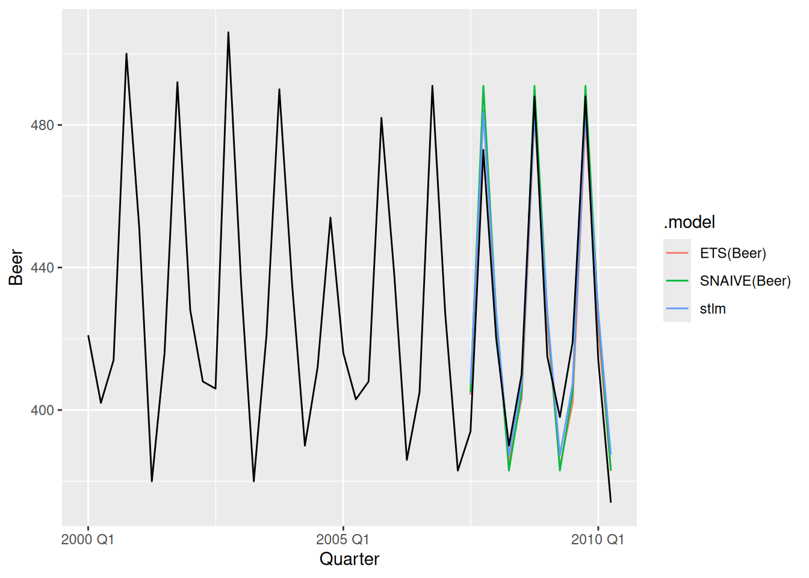
fc |> accuracy(aus_production)# A tibble: 3 × 10
.model .type ME RMSE MAE MPE MAPE MASE RMSSE ACF1
<chr> <chr> <dbl> <dbl> <dbl> <dbl> <dbl> <dbl> <dbl> <dbl>
1 ETS(Beer) Test 0.127 9.62 8.92 0.00998 2.13 0.563 0.489 0.376
2 SNAIVE(Beer) Test -2.92 10.8 9.75 -0.651 2.34 0.616 0.549 0.325
3 stlm Test -2.85 9.87 8.95 -0.719 2.16 0.565 0.502 0.283ETS and STLM do best for this dataset based on the test set performance.
- Bricks production from
aus_production
tidy_bricks <- aus_production |>
filter(!is.na(Bricks))
fc <- tidy_bricks |>
filter(Quarter < max(Quarter - 11)) |>
model(
ets = ETS(Bricks),
snaive = SNAIVE(Bricks),
STLM = decomposition_model(STL(log(Bricks)), ETS(season_adjust))
) |>
forecast(h = "3 years")
fc |> autoplot(filter_index(aus_production, "1980 Q1" ~ .), level = NULL)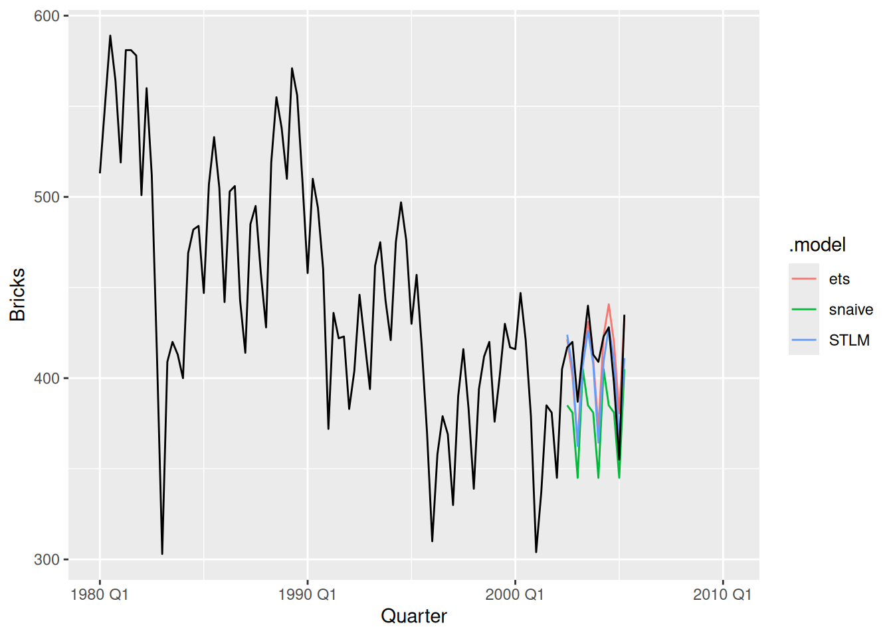
fc |> accuracy(tidy_bricks)# A tibble: 3 × 10
.model .type ME RMSE MAE MPE MAPE MASE RMSSE ACF1
<chr> <chr> <dbl> <dbl> <dbl> <dbl> <dbl> <dbl> <dbl> <dbl>
1 STLM Test 9.71 18.7 14.9 2.29 3.65 0.411 0.378 0.0933
2 ets Test 2.27 17.5 13.2 0.474 3.31 0.365 0.354 0.339
3 snaive Test 32.6 36.5 32.6 7.85 7.85 0.898 0.739 -0.322 ETS and STLM do best for this dataset based on the test set performance.
- Cost of drug subsidies for diabetes (
ATC2 == "A10") and corticosteroids (ATC2 == "H02") fromPBS
subsidies <- PBS |>
filter(ATC2 %in% c("A10", "H02")) |>
group_by(ATC2) |>
summarise(Cost = sum(Cost))
subsidies |>
autoplot(vars(Cost)) +
facet_grid(vars(ATC2), scales = "free_y")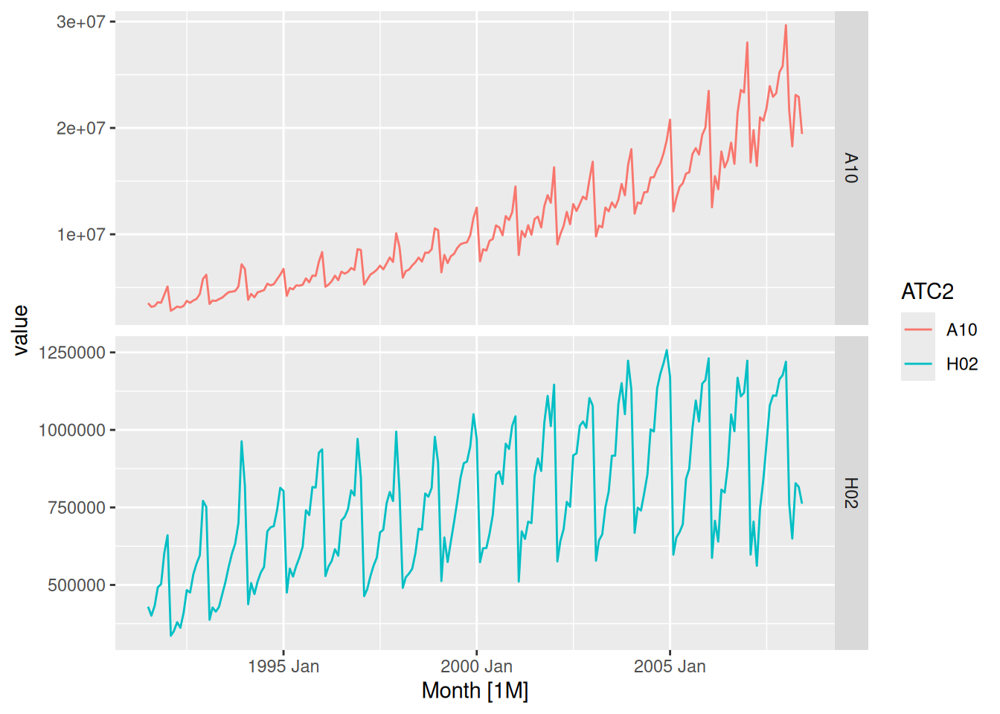
fc <- subsidies |>
filter(Month < max(Month) - 35) |>
model(
ETS(Cost),
SNAIVE(Cost),
STLM = decomposition_model(STL(log(Cost)), ETS(season_adjust))
) |>
forecast(h = "3 years")
fc |> autoplot(subsidies, level = NULL)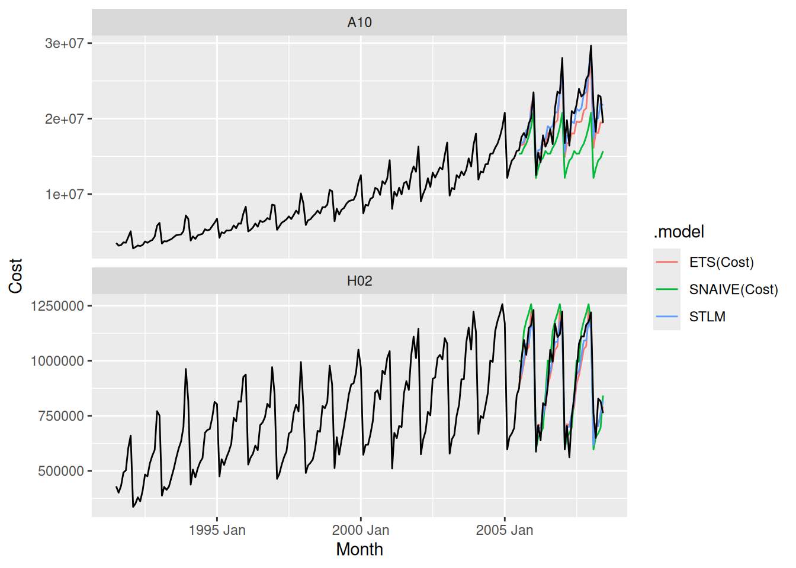
fc |>
accuracy(subsidies) |>
arrange(ATC2)# A tibble: 6 × 11
.model ATC2 .type ME RMSE MAE MPE MAPE MASE RMSSE ACF1
<chr> <chr> <chr> <dbl> <dbl> <dbl> <dbl> <dbl> <dbl> <dbl> <dbl>
1 ETS(Cost) A10 Test 1.38e6 2.36e6 1.85e6 5.83 8.74 1.89 2.00 0.177
2 SNAIVE(Cos… A10 Test 4.32e6 5.18e6 4.33e6 19.8 19.9 4.42 4.40 0.638
3 STLM A10 Test 3.27e5 1.62e6 1.32e6 0.783 6.73 1.35 1.37 -0.0894
4 ETS(Cost) H02 Test 2.70e4 7.65e4 6.45e4 1.99 7.05 1.09 1.07 -0.0990
5 SNAIVE(Cos… H02 Test -1.48e4 8.55e4 7.16e4 -1.31 7.88 1.21 1.20 0.0226
6 STLM H02 Test 2.24e4 6.83e4 5.63e4 1.61 6.24 0.951 0.959 -0.217 The STLM method appears to perform best for both series.
- Total food retailing turnover for Australia from
aus_retail.
food_retail <- aus_retail |>
filter(Industry == "Food retailing") |>
summarise(Turnover = sum(Turnover))
fc <- food_retail |>
filter(Month < max(Month) - 35) |>
model(
ETS(Turnover),
SNAIVE(Turnover),
STLM = decomposition_model(STL(log(Turnover)), ETS(season_adjust))
) |>
forecast(h = "3 years")
fc |>
autoplot(filter_index(food_retail, "2005 Jan" ~ .), level = NULL)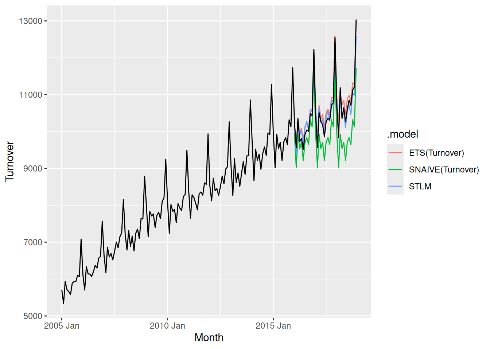
fc |> accuracy(food_retail)# A tibble: 3 × 10
.model .type ME RMSE MAE MPE MAPE MASE RMSSE ACF1
<chr> <chr> <dbl> <dbl> <dbl> <dbl> <dbl> <dbl> <dbl> <dbl>
1 ETS(Turnover) Test -151. 194. 170. -1.47 1.65 0.639 0.634 0.109
2 SNAIVE(Turnover) Test 625. 699. 625. 5.86 5.86 2.35 2.29 0.736
3 STLM Test -12.8 170. 144. -0.189 1.36 0.543 0.554 0.314The STLM model does better than other approaches for this dataset.
fpp3 8.8, Ex14
- Use
ETS()to select an appropriate model for the following series: total number of trips across Australia usingtourism, the closing prices for the four stocks ingafa_stock, and the lynx series inpelt. Does it always give good forecasts?
tourism
aus_trips <- tourism |>
summarise(Trips = sum(Trips))
aus_trips |>
model(ETS(Trips)) |>
report()Series: Trips
Model: ETS(A,A,A)
Smoothing parameters:
alpha = 0.4495675
beta = 0.04450178
gamma = 0.0001000075
Initial states:
l[0] b[0] s[0] s[-1] s[-2] s[-3]
21689.64 -58.46946 -125.8548 -816.3416 -324.5553 1266.752
sigma^2: 699901.4
AIC AICc BIC
1436.829 1439.400 1458.267 aus_trips |>
model(ETS(Trips)) |>
forecast() |>
autoplot(aus_trips)
Forecasts appear reasonable.
GAFA stock
gafa_regular <- gafa_stock |>
group_by(Symbol) |>
mutate(trading_day = row_number()) |>
ungroup() |>
as_tsibble(index = trading_day, regular = TRUE)
gafa_stock |> autoplot(Close)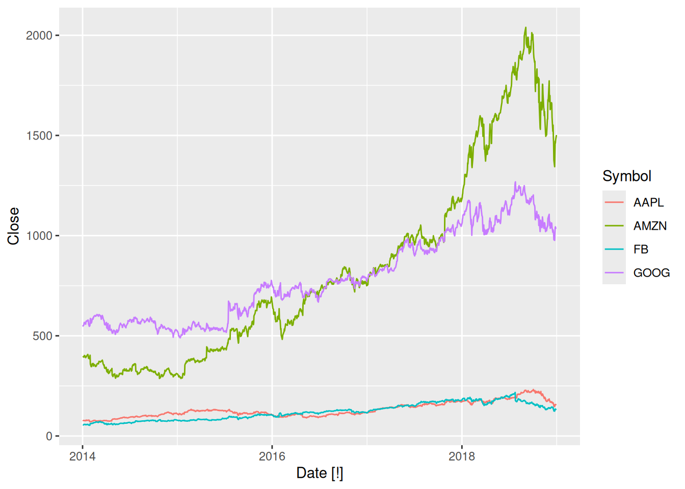
gafa_regular |>
model(ETS(Close))# A mable: 4 x 2
# Key: Symbol [4]
Symbol `ETS(Close)`
<chr> <model>
1 AAPL <ETS(M,N,N)>
2 AMZN <ETS(M,N,N)>
3 FB <ETS(M,N,N)>
4 GOOG <ETS(M,N,N)>gafa_regular |>
model(ETS(Close)) |>
forecast(h = 50) |>
autoplot(gafa_regular |> group_by_key() |> slice((n() - 100):n()))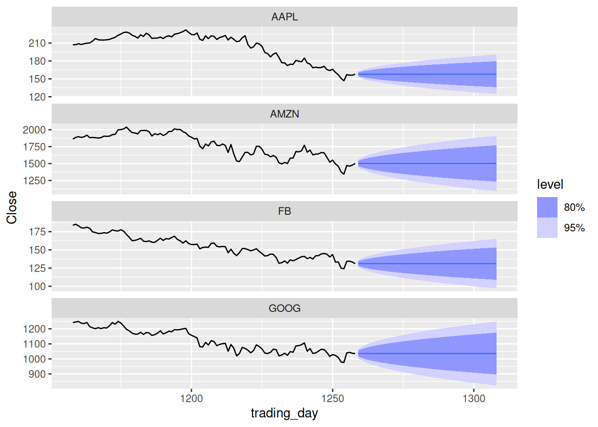
Forecasts look reasonable for an efficient market.
Pelt trading records
pelt |>
model(ETS(Lynx))# A mable: 1 x 1
`ETS(Lynx)`
<model>
1 <ETS(A,N,N)>pelt |>
model(ETS(Lynx)) |>
forecast(h = 10) |>
autoplot(pelt)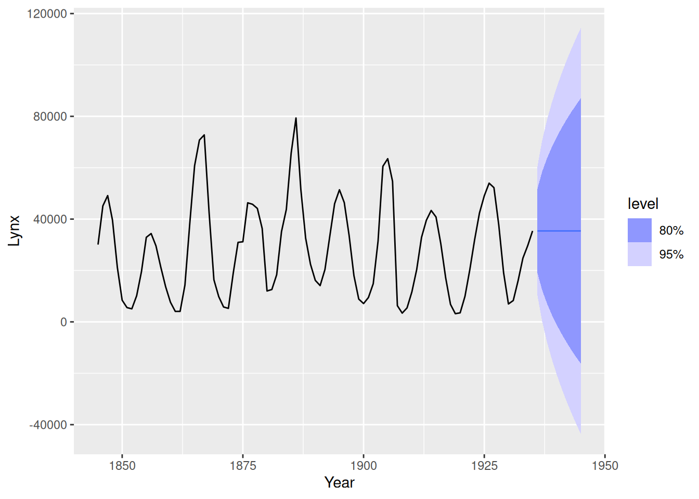
- Here the cyclic behaviour of the lynx data is completely lost.
- ETS models are not designed to handle cyclic data, so there is nothing that can be done to improve this.
- Find an example where it does not work well. Can you figure out why?
- ETS does not work well on cyclic data, as seen in the pelt dataset above.
fpp3 8.8, Ex15
Show that the point forecasts from an ETS(M,A,M) model are the same as those obtained using Holt-Winters’ multiplicative method.
Point forecasts from the multiplicative Holt-Winters’ method: \hat{y}_{t+h|t} = (\ell_t + hb_t)s_{t+ h - m(k+1)} where k is the integer part of (h-1)/m.
An ETS(M,A,M) model is given by \begin{align*} y_t & = (\ell_{t-1}+b_{t-1})s_{t-m}(1+\varepsilon_t) \\ \ell_t & = (\ell_{t-1}+b_{t-1})(1+\alpha\varepsilon_t) \\ b_t & = b_{t-1} + \beta(\ell_{t-1}+b_{t-1})\varepsilon_t \\ s_t & = s_{t-m} (1+\gamma\varepsilon_t) \end{align*} So y_{T+h} is given by y_{T+h} = (\ell_{T+h-1}+b_{T+h-1})s_{T+h-m}(1+\varepsilon_{T+h}) Replacing \varepsilon_{t} by zero for t>T, and substituting in from the above equations, we obtain \hat{y}_{T+h} = (\ell_{T+h-2}+2b_{T+h-2})s_{T+h-m} Repeating the process a few times leads to \hat{y}_{T+h} = (\ell_{T}+hb_{T})s_{T+h-m}
Now if h \le m, then we know the value of s_{T+h-m}.
If m < h \le 2m, then we can write s_{T+h-m} = s_{T+h-2m} (1 + \gamma\varepsilon_{T+h-m}) and replace \varepsilon_{T+h-m} by 0
If 2m < h \le 3m, then we can write s_{T+h-m} = s_{T+h-3m} (1 + \gamma\varepsilon_{T+h-m})(1+\gamma\varepsilon_{T+h-2m}) and replace both \varepsilon_{T+h-m} and \varepsilon_{T+h-2m} by 0
etc.
So we can replace s_{T+h-m} by s_{T+h - m(k+1)} where k is the integer part of (k-1)/m.
Thus \hat{y}_{T+h|T} = (\ell_{T}+hb_{T})s_{T+h -m(k+1)} as required.